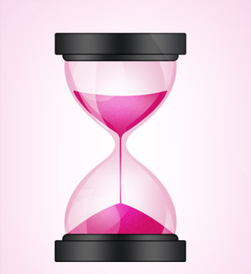

Если вам интересно принять участие в организации этого мероприятия или у вас есть вопросы и предложения, пишите на vse@5nasyat.ru
Помимо своей основной деятельности я также занимаюсь личными проектами на совершенно разные темы. Проекты у меня
то разгораются и развиваются, то затухают и останавливаются. Сейчас я стараюсь не бросаться воплощать новые
идеи, а откладывать их на полочку и заниматься уже начатыми проектами. Таких основных проекта сейчас два,
подробнее о них вы можете прочитать ниже.
Lingua Franca
Лингва Франка - это фестиваль, объединивший на одной территории культуру и языки разных
стран мира. В этом году в мероприятии будут принимать участие 6 стран: Германия, Франция, Испания,
Израиль, Япония и Китай. Уникальность фестиваля заключается в том, что он позволяет в неформальной
обстановке получить знания по интересующей вас стране, пообщаться с интересными людьми и стать ближе к
вашей мечте.
CreatoryStory
CreatoryStory - это блог, в котором я публикую интервью с творческими людьми. Пока что там
размещены только материалы про иллюстраторов и про то, как они создают свои работы. Но я планирую
расширять круг интересов и писать про музыкантов, танцоров, писателей, режиссёров.
Если вам интересно принять участие в развитии блога, вы хотите дать мне интервью или у вас есть вопросы и предложения, пишите на vse@5nasyat.ru
Проекты с полки

- Книжный клуб BookCrab (заморожен в связи с неактуальностью для участников)
- Французский клуб Français d’Habitude (заморожен в связи с недостатком времени)
- Интерактивная карта Иерусалима Jerusalem Timeline (заморожен в связи с недостатком информации)
- Блог “Ненужные специалисты"
- Content tracker
- Издательство электронных книг
- Artschool (черновая презентация проекта)
Если вас заинтересовал проект с полки, обязательно напишите мне на vse@5nasyat.